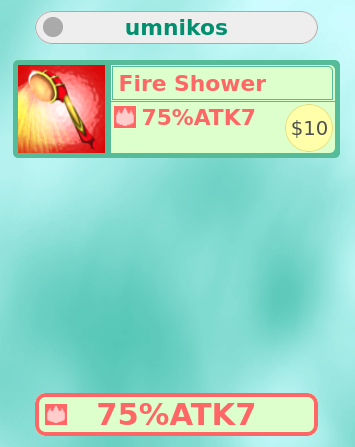

God Field is a free to play flash game. It’s a dueler where you play cards on your turn until you’re the only one left standing. Rounds are quick, it’s mostly luck, and it’s a lot of fun. Here’s how to play it.
Basics & Combat
Open the game and choose yourself a name. Once you do that there’s three game modes:
- Training: Play a 1v1 against an AI (start here)
- Hidden Melee: Play with your friends
- Royal Duel: Play a 1v1 against strangers (includes an ELO system)
This is what the game looks like once you’ve begun a round:
And here is the same image with the important elements annotated:
Let’s start with the top right corner. There’s three types of stats every player has:
- HP: Health Points. If it reaches 0 you lose. (The goal of the game is to make the opponent HP reach 0)
- MP: Magic Points. Some cards cost MP to play.
- $: Money. Every card has some predetermined cost and money is used when buying and selling cards (more on that later).
The most direct way to reduce the opponent’s HP is to attack them. You do that by playing a card with an ATK value (attack):
You can play at most 1 weapon at a time, but if you see a card with a +ATK value instead you can play that alongside a weapon:
Once you’ve prepared your attack, click on the left half of the action board to finalize your turn and stage the attack. Your opponent will have an opportunity to defend using any number of cards with a DEF value. Any amount of damage not defended is subtracted from their HP.
When the turn is over both you and your opponent draw as many cards as each person played, in our case we played 2 so we draw 2 and our opponent played 1 so they draw 1.
Then of course after that it’s our opponent’s turn and they get to attack us as well, and then we get to defend as well.
Some weapons and defences have elements as part of their description, like for example this fire-elemental torch that deals 1 damage:
Element types and interactions are explained well enough in the Bible (you can open it with the button in the top right corner) so I’ll just include a screenshot of that page:
To summarize: fire, water, wood, and stone attacks are harder to block as not any defence will do, light attacks are nearly impossible to block, and darkness attacks are easy to block but you must block it in its entirety or else it immediately kills you.
There are also weapons that only have a certain chance to hit, and that chance is displayed as a percentage:

Trading & Economy
There are several trading-related cards you can play. The most basic one is Buy:
The player on the receiving side of Buy offers a random card for sale, and then the player who played Buy gets to choose whether they want buy the card or not, provided they have enough money to pay for it.
Buying has the effect of increasing your total card count by 1. The cost of each card is fixed and isn’t tied to the card’s strength. If there is no cost listed, then the card is free.
That brings us to Sell:

The player who played Sell chooses what card they want to sell and the opponent is forced to buy it, even if they don’t have money for it (they pay with money, then with MP, then with HP). Selling your opponent a very expensive item is an effective way to bankrupt them and win.
Selling has the effect of decreasing your total card count by 1.
The last economy-related card is Exchange. This is an action you can take to freely convert between HP, MP, and Money.
Because of this card, the three stats can be approximately thought of as being a single stat. Gaining money and MP is almost the same as gaining HP, and losing money and MP is almost the same as losing HP.
Praying
If you have no weapon cards, you can pray.
Praying purely makes you draw 1 card, thus increasing your total card count by 1.
Miracles
Some cards have an attached MP cost to them. Those are miracles:
Unlike regular cards, miracles are infinitely reusable and every use of a miracle increases your total amount of cards by 1.
Discarding
If your hand gets too full, you can always discard cards. It does count as an action, but you can discard as many non-weapon cards as you want in a single discard:
You do not draw after discarding.
Curses
There are some cards that apply a debuff to you or your opponent:
Those debuffs are called “curses”. They are also listed in the Bible so here’s the relevant page:
The most notable curses are the diseases. Ordered in severity they are: Cold, Fever, Hell, Heaven. When heaven worsens it sets your HP to 0. (It does not disappear if you survive that with Sun Amulet)
There is a miracle that lets you apply Heaven to your opponent. Apply it twice for a quick win:
The other 4 curses are way less severe but still nasty:
- Fog prevents you from seeing the stats of your opponent.
- Flash restricts you from using more than 1 card when defending an attack.
- Dream makes your cards appear like different cards (but still of the same type).
- Dark cloud makes all attacks against you that have a chance to miss always hit.
At any given time you can have any combination of those four, plus one of the diseases.
Various cards can be used to clean some or all of the curses that you have:
“Attack somebody”
There are cards that “attack somebody”, like Dangerous Pestle:
The “somebody” attacked is a random player, including you. Thus in a 1v1 there’s a 50/50 chance the pestle just smacks you instead.
Guardians
Some cards let you summon a guardian for yourself:
You cannot have more than one guardian at a time. Guardians just sit there and sometimes do their thing after the opponent’s turn ends.
When you take damage there’s a chance your guardian disappears.
Rings & Counterattacks
Ring cards let you make counterattacks:
You use them during defence:
After the initial attack is over and you’ve taken some amount of damage, the ring card makes a counterattack whose strength is based on the amount of damage you took. (Even if you’re dead)
Depending on the ring used it won’t care about the amount of damage taken and will instead purely launch a counterattack that curses the opponent.
Reflect, Bounce, and Block
Be careful how strong of an attack you create, because it might bite you instead. Reflect cards can be used during defence to turn the tables on the attacker and launch their attack against them.
Bounce is almost the same but it sends the attack to a random player, so in a 1v1 there’s a 50/50 chance it just sends it to you and it’s as if you didn’t defend at all.
Block completely negates the attack no matter how large it is or of what type it is.
Phenomena
Random events caused by the String of Fate card. They tend to go both ways and may hurt you more than the opponent.
Apocalypse
After some predetermined number of turns, the Apocalypse happens.
It has two effects:
- Discard is replaced with Sacrifice, which gives you new cards for every card discarded
- Every time you draw a card there’s a 25% chance for a devil to appear. Their effects are noted in the Bible, but they mostly just deal damage to get the game to end.
More than two players
In games with 3 or more players, percentage-based weapons target all enemies and not just one.